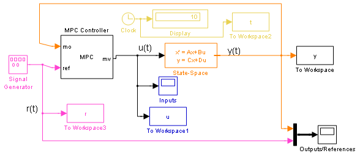
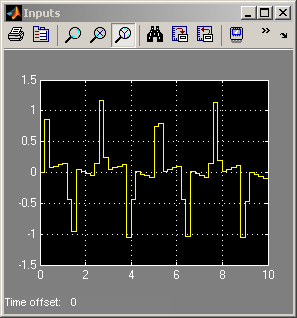
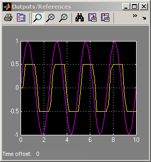

MPC Code Generation with Real-Time Workshop®
Contents
This demonstration shows how to use Real-Time Workshop® to generate real-time code from a Simulink® diagram containing MPC controllers. We consider here a single-input single-output system tracking of a sinusoid under output constraints.
Plant Model and MPC Controller Setup
To run this demo, Simulink® and Real-Time Workshop® are required.
if ~mpcchecktoolboxinstalled('simulink') disp('Simulink(R) is required to run this demo.') return end if ~mpcchecktoolboxinstalled('rtw') disp('Real-Time Workshop(R) is required to run this demo.'); return end
We start defining the plant to be controlled.
N1=[3 1]; D1=[1 2*.3 1]; [A,B,C,D]=tf2ss(N1,D1); x0=[0 0]';
Now, setup an MPC controller object.
Ts=.2; %Sampling time % Input and output constraints MV=struct('Min',-Inf,'Max',Inf,'RateMin',-20,'RateMax',20); OV=struct('Min',-0.5,'Max',0.5); p=40; m=3; mpccon=mpc(ss(A,B,C,D),Ts,p,m,[],MV,OV);
-->The "Weights.ManipulatedVariables" property of "mpc" object is empty. Assuming default 0.00000. -->The "Weights.ManipulatedVariablesRate" property of "mpc" object is empty. Assuming default 0.10000. -->The "Weights.OutputVariables" property of "mpc" object is empty. Assuming default 1.00000.
Simulation Using Simulink®.
Tstop=10; %Simulation time open_system('mpc_rtwdemo') sim('mpc_rtwdemo',Tstop)
-->Converting model to discrete time. -->Integrated white noise added on measured output channel #1. -->The "Model.Noise" property of the "mpc" object is empty. Assuming white noise on each measured output channel.  
Call Real-Time Workshop® to compile the Simulink® diagram into an executable Change directory to a temp directory so that you have write-permission to generate the relevant target files and the executable.
close_system('mpc_rtwdemo/Inputs') close_system('mpc_rtwdemo/Outputs//References') cwd = pwd; cd(tempdir) try h = waitbar(0.3,'Compiling... Please wait until it finishes.'); rtwbuild('mpc_rtwdemo'); waitbar(0.8,h); close(h); catch ME close(h); disp(ME.message); return end
Undefined function or method 'getPathName' for input arguments of type 'cell'.
Run the executable, called mpc_rtwdemo.exe:
If the build finished successfully and if you are able to run the executable (status=0), you should have a data file named mpc_rtwdemo.mat in your temporary directory. You can load this file and compare the data with that generated by simulating the model mpc_rtwdemo.mdl.
status = system('mpc_rtwdemo');
cd(cwd)
bdclose('mpc_rtwdemo')